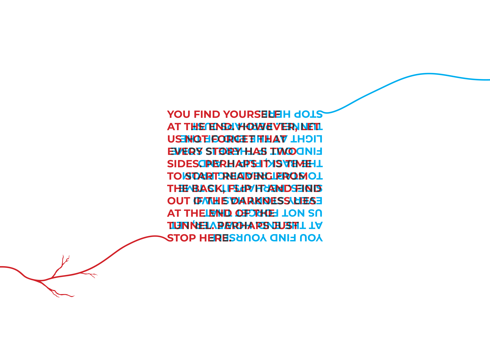
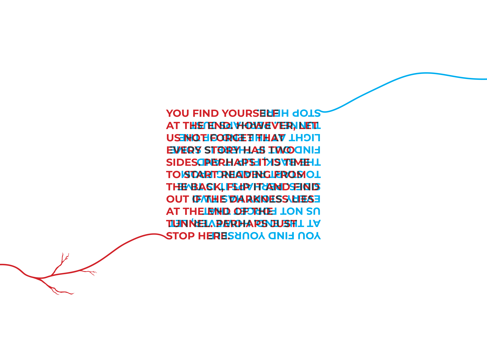
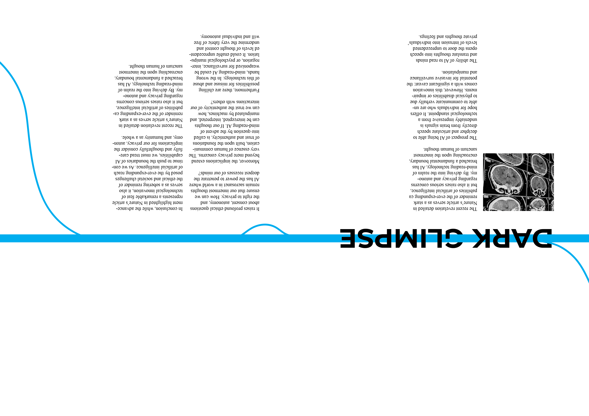
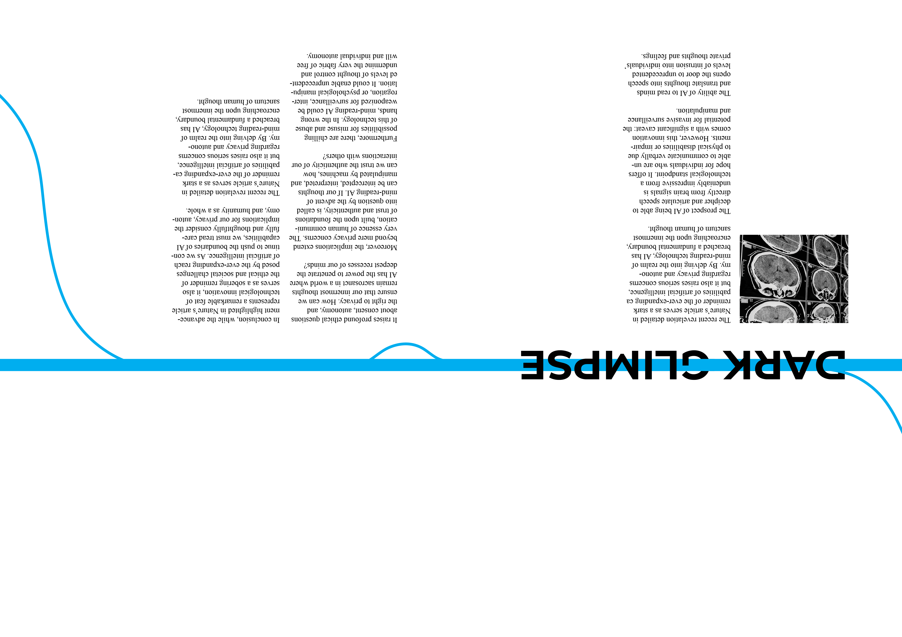
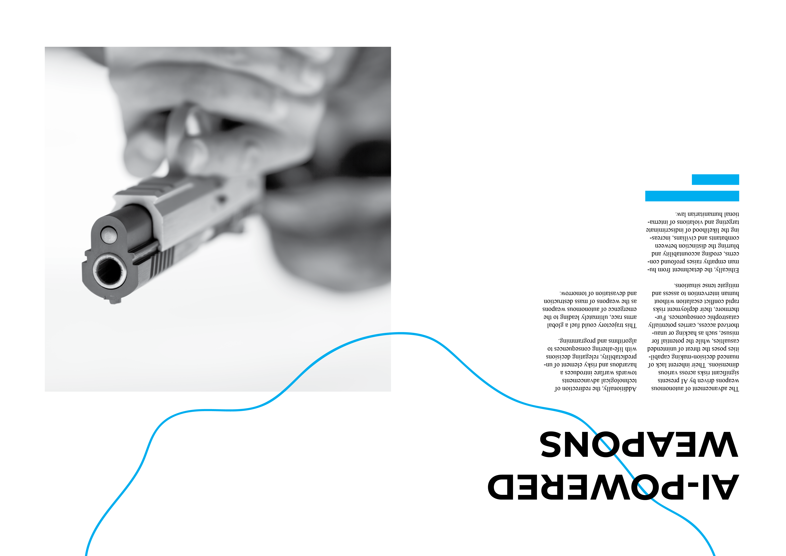
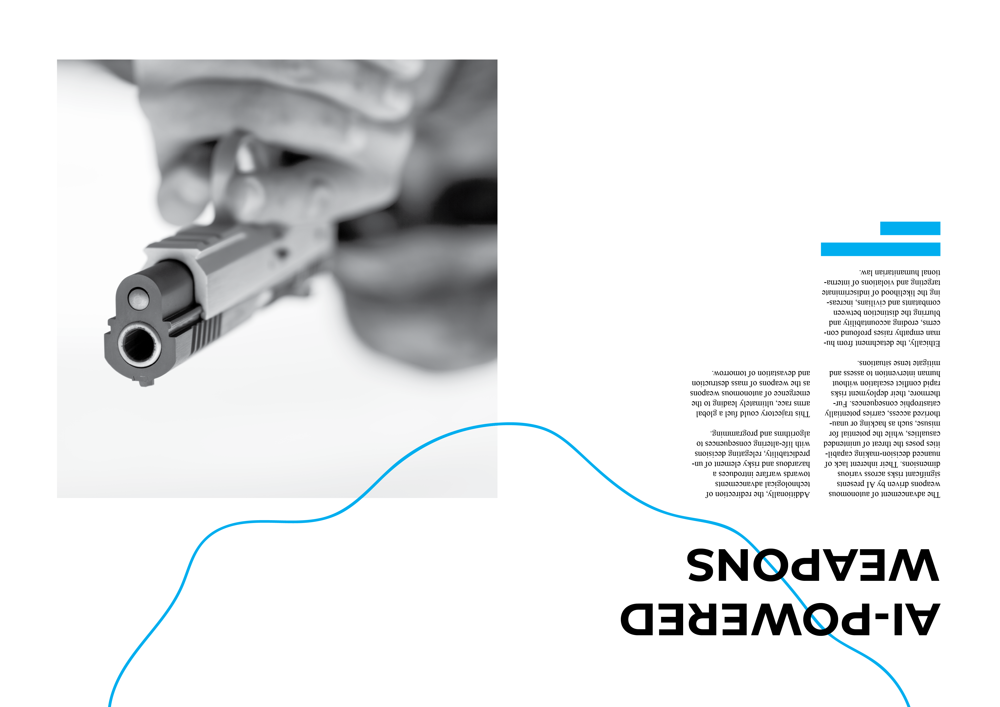
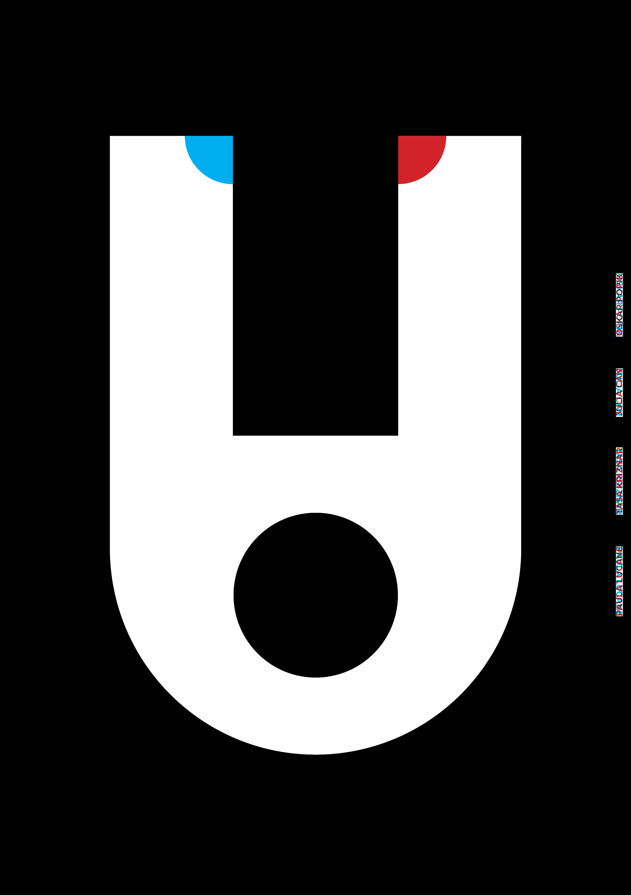
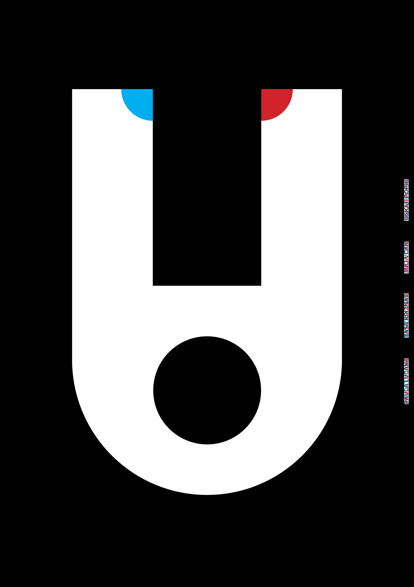

AI magazine
Group project for Visual Communication course.
This is a magazine on the topic of AI. Magazine can be viewed from both sides (there is a light and dark cover). The idea behind this is to show the two sides of AI, the more positive side where AI can be benefitial for humans and the negative side. Magazine is flippable, therefore, the reader can decide which side they want to start from and form their own oppinions about what they believe in.
Blood veins and internet cord throughout the magazine spreads helps with the continuity of the story, merging in the middle, where the standpoint changes from one to the other. Use of anaglyph design is intentional, it gives the viewer a chance to see two differnet versions of a word depending on the colored lence that is used to look at the spread. (The physical magazine is accompanied with colored plastic filters/lenses)
Created with: Adobe Illustrator, Adobe InDesign, Photoshop, Midjourney (AI created image)


 

 

 

 
